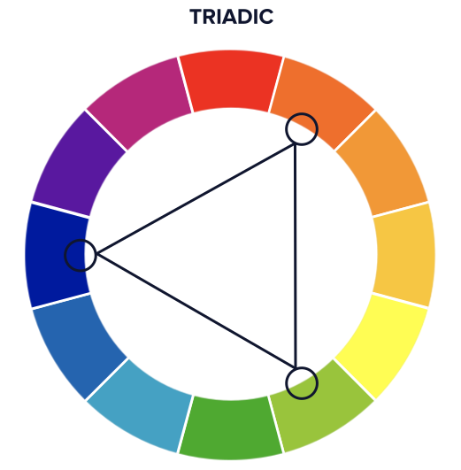
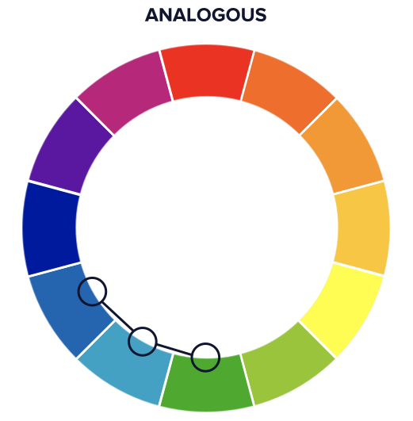
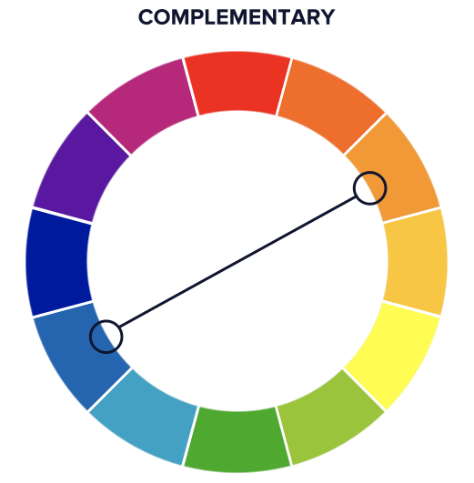
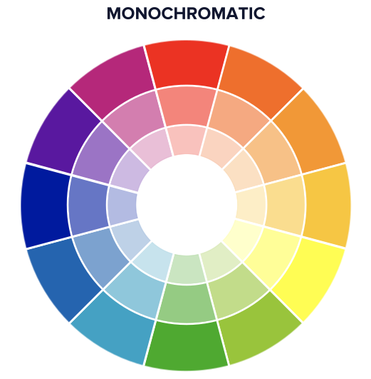

Color schemes
Most users skim websites, they will not read every word and checking
every menu, you need to guide the user to the most important content
with good color choices.
Triadic color scheme
Provides a sense of equality, vibrancy, and security in your
designs.
If we stick with blue being our main color, we would then select
red-orange and yellow-green as the pairing combinations. This
creates a triangle of colors within the color wheel and gives us a
wider palette to choose from.

Analogous color scheme
Low-contrast experience
Color schemes create a visually pleasing and calming display.
They shouldn't be used for content that needs the user's direct
attention, but they can be used to create backgrounds that do not
compete with the main content of the site.

Complementary color scheme
Complementary color palettes are very common in logos and
uniforms.
However, when used strategically, they can draw attention to
certain elements on the page that you want users to focus on.

Monochromatic
A single color with varying shades and tints to create a
monochromatic palette.
The use of a single color can provide an immediate sense of
harmony.

Cool colors and Warm colors
Colors can be clasified in cool colors or warm colors
Cool colors
Cool colors are given this designation because of their calming,
soothing nature. They’re often associated with winter climates or
water.
These colors range between blue, purple and green. Most gray
colors fall into the cool category as well.
Warm colors
Warm colors range between red and yellow, which include various
versions of those colors in addition to orange. This also
comprises colors such as brown and tan. These are considered to be
“warm” colors in that they evoke a sense of warmth. For instance,
fire is associated with warmth, and it typically burns between the
spectrum of reds and yellows. Warm colors can also promote a
feeling of aggression and are considered bold.
Optimal form of setting color in websites
There are different ways of setting colors in CSS, those are:
- Keyword: example, yellow
- Hex Code: example, #fff
- RGB: example, rgb(23, 45, 23)
- HSLA: example, hsla(34, 100%, 50%, 0.1)
But the HSLA is the best and the most semantic, this is why:
- The CSS color keywords only give us a few options.
-
Hex Codes and RGB values cannot be intuitively adjusted. For
example, you get feedback on your design that one color needs to
be a little brighter, that does not translate to intuitive
changes within Hexadecimal codes or RGB values.
-
HSLA is the most semantic system of setting colors with CSS.
- Let you control the contrast and the color scheme better
Use of the HSLA:
-
The “pure” color is set with the Hue. This is expressed as the
angle in degrees around the color wheel.
-
Saturation refers to the intensity or purity of that hue. Colors
with full saturation (100%) are the color itself, colors with no
saturation (0%) are completely grayscale.
-
Lightness refers to the lightness of the color. 0% is black,
100% is white.
-
A, or alpha, refers to the opacity. 0% is fully transparent,
100% is fully opaque.
Best practices about colors
-
Use neon colors sparingly. While the use of
neon colors can feel hip, they are often hard on a user's eyes.
-
Avoid vibrating colors. Vibrating colors result
from pairing two colors with high saturation together that may
be complementary to one another. It creates a glowing or moving
effect, which also can be hard on one's eyes.
-
Use backdrops to separate vibrating colors. In
the example, the white backdrop behind the green card reduces
the space where the contrasting colors (red and green) are
directly next to each other, but the overall effect is still too
intense for most websites.
-
Avoid color combinations with insufficient contrast,
including:
- Bright colors on top of bright colors
- Light colors on top of light colors
- Dark colors on top of dark colors